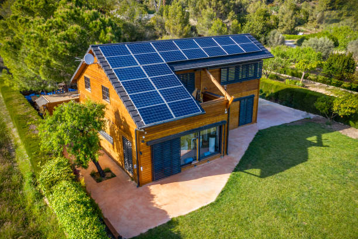

Weldon North Carolina
info@lindahardware.pro
Weldon North Carolina
info@lindahardware.pro

Transform your Weldon North Carolina outdoor space with premium pea gravel. Whether for decorative features or functional ground cover, enjoy long-lasting results and affordable landscaping solutions.
Click Here To Call Us (877) 848-1711When it comes to creating beautiful and durable outdoor spaces, our Pea Gravel services in Weldon North Carolina are the top choice for homeowners and businesses alike. Known for its versatility and natural aesthetic, pea gravel is the perfect solution for a range of landscaping and construction projects. Whether you're working on a driveway, pathway, garden bed, or drainage system, our high-quality pea gravel offers an eco-friendly and cost-effective alternative to other landscaping materials.
Our pea gravel is sourced from the best quarries to ensure it is clean, consistent, and easy to work with. We provide a wide variety of colors and sizes to match your unique design needs. Pea gravel’s rounded texture allows for excellent drainage, making it a popular choice for areas prone to water runoff or heavy rainfall in Weldon North Carolina .
Not only is pea gravel an attractive option, but it's also low-maintenance. It’s resistant to weed growth and can be easily replenished to maintain its appearance. Our team of experts in Weldon North Carolina will help you determine the ideal amount of pea gravel needed for your project and ensure it’s installed properly for long-lasting results.
For the best pea gravel services in Weldon North Carolina choose us for reliable, professional, and affordable solutions. Contact us today for a free consultation and get started on transforming your outdoor space with high-quality pea gravel!
Residential & commercial Pea Gravel
Quality services at affordable prices
Immediate 24/ 7 emergency services


Pea gravel is a versatile and practical choice for landscaping and construction in Weldon North Carolina offering multiple benefits that make it ideal for the region's unique climate. Known for its smooth, rounded appearance, pea gravel is not only aesthetically pleasing but also highly functional, making it an excellent choice for a variety of outdoor applications.
In Weldon North Carolina where the weather can fluctuate between heavy rains and intense heat, pea gravel provides excellent drainage. The small, loose stones allow water to flow through easily, preventing pooling or flooding that can damage plants and property. This makes it an ideal solution for driveways, walkways, and garden paths, especially in areas prone to heavy rainfall or frequent storms.
Additionally, the heat-resistant properties of pea gravel ensure that it stays cool even in the sweltering summer months. Unlike other materials, pea gravel does not absorb excessive heat, which can be a concern in hot climates. Its natural color also helps reflect sunlight, keeping outdoor spaces more comfortable.
Pea gravel’s durability also plays a crucial role in Weldon North Carolina 's climate. With minimal maintenance required, it can withstand the fluctuations in temperature and humidity without losing its integrity, providing long-lasting beauty and function for homeowners and businesses alike.
For an eco-friendly and cost-effective landscaping solution, pea gravel is a smart choice in Weldon North Carolina offering lasting value in both aesthetics and performance.
Residential & commercial Pea Gravel
Quality services at affordable prices
Immediate 24/ 7 emergency services
Proper drainage is critical for any commercial property, and pea gravel can provide an effective solution to manage water runoff. Using pea gravel in drainage systems ensures effective water flow while reducing the risk of flooding and erosion on your property.
, we are the experts in setting up commercial drainage systems that incorporate pea gravel. Our knowledgeable staff can assess the specific needs of your property to determine the optimal layout and materials for the best drainage performance.
Choosing us for your drainage solutions ensures you are working with a team that values quality and reliability. We offer lasting solutions that protect your investment while promoting a healthy environment on your commercial property.

Creating stunning garden displays requires attention to detail and quality components. Pea gravel is an exceptional choice for showcasing plants, artwork, or features while enhancing aesthetics and providing excellent drainage.
, our team specializes in designing captivating garden displays utilizing pea gravel as a foundational material. The natural look of pea gravel complements various plants and decorative elements, allowing your exhibits to shine.
Our commitment to quality ensures that we provide only the best materials that will stand the test of time, whether you are showcasing a seasonal display or a permanent art installation. Choose us to transform your garden into a stunning visual experience.

Managing erosion is crucial for protecting your commercial property and maintaining its integrity. Pea gravel is a highly effective solution for erosion control due to its natural properties that promote soil retention while allowing water to flow naturally.
At Pea Gravel, we provide erosion control strategies tailored specifically for commercial properties . Utilizing pea gravel, we design systems that prevent soil erosion while maintaining an appealing landscape that aligns with your property's aesthetic.
Our team examines the specific needs of your property and develops a comprehensive plan to address potential erosion issues effectively. With our expert installation and quality materials, you can maintain the beauty and functionality of your property without the burden of ongoing erosion problems. Choose us for your erosion control solutions where we prioritize durability and quality through innovative pea gravel applications.

Efficient drainage is essential for any property to maintain its functionality and protect structures from water damage. Pea gravel is an ideal material for drainage systems, providing both excellent performance and visual appeal.
At Pea Gravel, we specialize in developing effective drainage systems for properties in Weldon North Carolina using high-quality pea gravel. Our team understands the challenges posed by poor drainage and is committed to designing solutions that ensure proper water flow and distribution.
Pea gravel's porous composition allows it to manage water effectively while being aesthetically pleasing. We work closely with our clients to create drainage solutions tailored specifically to their needs, considering factors such as landscape layout and water flow patterns. Choose us for your drainage needs, ensuring you keep your properties safe and dry with our quality pea gravel systems.

Adding ponds and water features to your landscape can create a tranquil and appealing environment. Pea gravel serves as an excellent choice for ponds, providing a natural-looking option that enhances the aesthetic while improving functionality.
Using pea gravel in water features or around ponds can help stabilize soil, promote drainage, and create a clean, inviting atmosphere. our team specializes in designing water features that blend seamlessly with your landscaping while focusing on the benefits of using grape gravel.
When you choose us, you’re partnering with experts dedicated to creating beautiful, functional outdoor environments. We ensure all aspects of your pond or water feature installation reflect your vision while offering long-lasting quality.
Artificial turf can be a fantastic solution for low-maintenance landscaping, and using pea gravel as infill enhances its functionality. Pea gravel provides excellent drainage, allowing water to flow through while preventing the turf from becoming too compacted.
Our team understands how to properly incorporate pea gravel into your artificial turf setup, ensuring optimal performance while enhancing aesthetics. Choosing us means investing in a lawn that looks incredible while requiring less water and maintenance compared to natural grass.
We pride ourselves on delivering high-quality installations that exceed your expectations. With our expertise, your artificial lawn will thrive in every season, providing you with a beautiful green space year-round.

Creating clear boundaries for your driveway enhances aesthetic appeal and functionality while helping keep gravel in place. Pea gravel is an excellent choice for driveway edging, offering a visually appealing, natural solution that complements any landscape design.
, effectively edging your driveway with pea gravel results in a neat and finished appearance. It also helps define the boundaries of your landscaping while providing natural drainage, reducing the potential for erosion from washout during heavy rains.
Our expertise in installing pea gravel driveways ensures that you're receiving quality workmanship and material selection. We are committed to designing driveway solutions that enhance your property’s curb appeal and functionality.

When it comes to achieving the right blend for concrete mixes, incorporating pea gravel provides vital benefits. Pea gravel increases the durability of the concrete while enhancing the visual appeal due to its natural aggregates.
In Weldon North Carolina our services include delivering high-quality pea gravel suited for concrete mixing. Using this material results in a strong, aesthetically pleasing finish for driveways, sidewalks, and foundations, ensuring long-lasting results.
By choosing us for your concrete mixing needs, you can trust that you are receiving top-quality materials and exceptional service. We work with you through every step of your project, ensuring that your concrete application meets your expectations and stands the test of time.
Years Experience
Expert Technicians
Satisfied Clients
Compleate Projects
At Linda Hardware, we pride ourselves on providing the highest quality pea gravel to homeowners and contractors across Weldon North Carolina . With years of experience in the industry, our dedicated team ensures that every product meets the highest standards of quality, durability, and reliability. Whether you're working on landscaping, construction, or any other project, we deliver the perfect pea gravel for your needs.
What sets us apart is our commitment to customer satisfaction. We understand that every project is unique, and that’s why we offer a wide range of pea gravel options to suit diverse preferences. From decorative gardens to durable driveways, our pea gravel is perfect for a variety of applications. Our team is always ready to help guide you in choosing the best material for your project, ensuring that you get exactly what you need.
We serve customers in all cities in Weldon North Carolina with fast, reliable delivery and competitive pricing. Our local knowledge of Weldon North Carolina gives us an edge in providing the right materials for the area’s specific needs.
At Linda Hardware, we believe in offering more than just products; we offer solutions that make your projects easier and more successful. From top-tier quality to outstanding customer service, trust us to be your go-to supplier for pea gravel in Weldon North Carolina .
Choose Linda Hardware today for unmatched service, premium quality, and reliable delivery!
In today's world, ensuring your driveway is both functional and aesthetically pleasing is essential. Pea gravel is an excellent choice for driveways due to its durability and versatility. Not only does it provide a stable surface for vehicles, but it also enhances the curb appeal of your property. With its smooth, rounded stones, pea gravel does not only look great but also allows for proper drainage, preventing water buildup that could lead to driveway damage.
At Pea Gravel, we specialize in installing pea gravel driveways that are tailored to meet the unique needs of homeowners . Our extensive experience allows us to understand the local climate and conditions which influence the choice of materials and design. Thanks to our commitment to quality, we source only the best pea gravel from reliable suppliers.
Investing in a pea gravel driveway means choosing a low-maintenance option that can withstand the test of time. When installing, our expert team ensures correct grading and depth so that your driveway can last for years without requiring extensive care. Additionally, our design options are vast, ranging from traditional to contemporary styles, ensuring every homeowner finds the perfect look. Let us be your first choice for pea gravel driveways in Weldon North Carolina .
Landscape design can significantly impact the overall look and feel of your outdoor space. When it comes to innovative and versatile landscaping solutions, pea gravel is an excellent choice. Whether you're looking to create a zen garden, a playground for your kids, or a serene retreat, pea gravel offers endless possibilities.
With its aesthetic appeal and landscaping benefits, our pea gravel options are perfect for pathways, edging, ground cover, and decorative accents. We pride ourselves on being at the forefront of landscape trends in Weldon North Carolina . Our team is dedicated to helping you conceptualize your landscaping vision with quality materials and expert advice. Free consultations are available, allowing you to explore various styles that utilize our pea gravel.
By choosing us, you gain access to professional landscape designers who understand the unique climate and environmental conditions of Weldon North Carolina . We can help transform your outdoor area into a beautiful, functional space that you'll love for years to come.
Creating inviting walkways and pathways is essential for enhancing the accessibility and aesthetics of your outdoor spaces. Pea gravel pathways offer a unique charm that blends beautifully with nature, making them a favored choice among homeowners and landscapers alike.
At Pea Gravel, we design and install pea gravel walkways that not only set the stage for a beautiful outdoor experience but also provide functionality. Our team understands the importance of designing pathways that accommodate regular foot traffic while ensuring ease of use. This is achieved through careful depth measurement and stone selection that aligns with your specific needs.
Furthermore, pea gravel allows for excellent drainage, reducing muddy problems particularly during rainy seasons. Our landscaping experts can create winding garden paths or straightforward solutions that lead directly to your door, customizing to fit your style and layout. Choosing us means you are selecting quality materials, expert installation, and a commitment to creating outdoor spaces you'll love for years.
Pea gravel is not just for driveways or walkways; it's an incredible option for garden beds as well. Utilizing pea gravel around your plants creates a visually appealing contrast, enhances drainage, and minimizes weed growth. At Pea Gravel, we specialize in pea gravel solutions for garden beds that not only look great but also support your plants' health.
The unique properties of pea gravel help maintain soil moisture while allowing excess water to drain away. This aspect is particularly important during intense rainfalls or when watering your plants, as it helps prevent soil erosion and root rot. The smooth, rounded edges of pea gravel also contribute to a soft aesthetic that complements various plants, flowers, and shrubs.
Furthermore, we offer a variety of colors and sizes to cater to your specific needs. Our expert landscaping team will help you choose the best pea gravel to match your garden's existing design and enhance its beauty. Choosing Pea Gravel for your pea gravel needs means you are investing in quality materials and expert service, ensuring that your garden beds thrive in Weldon North Carolina .
If you are looking to create a charming and relaxing space in your backyard, pea gravel patios are an excellent choice. They offer a beautiful and practical solution for outdoor entertainment areas or cozy relaxation spots surrounded by nature. The smooth texture and attractive colors of pea gravel can complement any patio design.
At Pea Gravel, we specialize in designing and installing pea gravel patios that reflect your lifestyle and enhance your outdoor experience. We'll work with you to understand your needs and dreams for the patio space. This means considering everything from the size and shape of your desired patio to how you plan to use it, whether it's for dining, lounging, or entertaining guests.
Pea gravel is low-maintenance and allows for effective drainage, preventing water from pooling on your patio after a rainstorm. Our knowledgeable team ensures proper installation techniques, creating a durable surface that can withstand heavy foot traffic while remaining comfortable underfoot. Experience the joy of a beautiful pea gravel patio with our expert services in Weldon North Carolina .
Safety is paramount when it comes to designing playground areas, and pea gravel is an ideal solution. It provides a soft surface that can cushion falls, reducing the risk of injury. Our premium-grade pea gravel is certified safe for use in playgrounds, making it a reliable choice for homeowners, schools, and parks .
The natural drainage and permeability of pea gravel help keep playgrounds dry, reducing mud and accumulations of water that can contribute to unsafe conditions. It also offers a non-slip surface that encourages active play.
When you choose us for your playground surface needs, you’re selecting a company with expertise in safety and quality. We understand the needs of families and communities and strive to provide an installation that meets or exceeds safety standards while creating a fun and engaging environment for children.
Creating a comfortable and functional space for your pets is essential for any responsible pet owner. Pea gravel is a fantastic choice for dog runs and pet areas due to its natural non-toxic composition and excellent drainage capabilities. It helps prevent muddy paws and creates an environment where dogs love to play and rest.
With its soft texture, pea gravel is a safe surface for pets, reducing the risk of injury while allowing for easy cleanup of pet waste. Our team specializes in creating custom dog runs tailored to your lifestyle and the specific needs of your pets .
We offer a variety of pea gravel options, allowing you to choose the right base for your pet area. Whether it's a designated play area or a simple pathway, we ensure every detail is executed with care. Choose us for your pet areas, and give your furry friends a beautiful, safe, and fun environment they will love.
Transform your flower beds into stunning focal points with the addition of pea gravel. It’s an excellent mulch alternative for flower beds, providing excellent drainage while maintaining moisture in the soil. The beauty of pea gravel comes not only from its appearance but also from its ability to enhance the health and vitality of your plants.
In Weldon North Carolina using pea gravel in flower beds can help prevent weed growth, making the upkeep of your garden much easier. Its unique texture and color options can also complement a wide variety of flowers, highlighting their beauty.
When you choose our services, you’re opting for eco-friendly options tailored to your garden’s needs. Our team is dedicated to helping you design flower beds that are not only beautiful but well-maintained, ensuring your flowers thrive all year long.
Rock gardens are a beautiful way to create an informal landscape that mimics nature and provides a serene escape. Pea gravel perfectly complements other stones and plants in a rock garden, adding a touch of elegance while ensuring good drainage to prevent water pooling around the plants.
Our experience in creating stunning rock gardens in Weldon North Carolina means we know how to blend different materials and plants harmoniously to achieve your desired aesthetic. Whether you want a modern approach or a classic rustic look, our team can help you design and install a rock garden featuring pea gravel as a key element.
Furthermore, our commitment to quality materials ensures that your rock garden will look beautiful and stand the test of time. Choose us to elevate your outdoor experience with breathtaking rock garden designs tailored to your taste and lifestyle.
As water conservation becomes increasingly important, xeriscaping provides an excellent way to create beautiful landscapes that reduce water usage. Pea gravel is an ideal material for xeriscaping, facilitating drainage and providing a versatile ground cover that complements drought-resistant plants. homeowners can achieve a stunning landscape design while being responsible stewards of the environment.
Choosing pea gravel for your xeriscape means you'll enjoy low-maintenance beauty year-round. It helps stabilize the soil and prevents weed growth while allowing you to focus on developing a landscape that thrives with minimal irrigation.
Our team is dedicated to assisting you in creating a xeriscape that meets your aesthetic desires and sustainability goals. We provide consultation and implementation services that highlight the beauty of your outdoor space while effectively conserving water.
Parking lot design is often seen as purely functional, but the choice of materials can significantly affect aesthetics and drainage. Pea gravel is an innovative option for parking lots, offering durability, reliability, and aesthetic advantages that benefit businesses .
At Pea Gravel, we are committed to providing top-notch solutions for parking lots that incorporate pea gravel effectively. Its porous nature allows rainwater to percolate through, reducing puddles and preventing flooding. This not only improves safety but also contributes to a more appealing environment for employees and guests.
In addition to functionality, pea gravel adds a distinctive look to your parking lot, setting your business apart. It can be used in various designs, from traditional gravel parking spaces to structured layouts that promote efficient and organized parking. Partner with us to create a parking lot that provides both practicality and visual appeal for your business .
Whether hosting weddings, parties, or community events, having an inviting outdoor space is essential. Pea gravel provides an attractive, comfortable surface for event sites, allowing for excellent drainage while creating a relaxed atmosphere.
, our team can help design an event space that meets all your needs, ensuring it’s functional and welcoming. Pea gravel can facilitate pathways, seating areas, and even designated play zones for kids, all while contributing to a laid-back ambiance.
When you choose us for your outdoor event space, you’re choosing quality and creativity. Our attentive team will work closely with you to create a perfect layout that makes your event unforgettable while taking into consideration the unique aspects of your property.
In the fast-paced world of business, a reliable and attractive commercial pathway can significantly enhance the visitor experience. Pea gravel is an ideal solution for commercial pathways, providing a durable surface that supports foot traffic without compromising on style or function.
, investing in pea gravel pathways means choosing a product that fosters a welcoming atmosphere while ensuring excellent drainage and low maintenance. This adaptability makes pea gravel a practical choice for offices, shopping centers, and public venues.
When you partner with us for your commercial pathways, you receive a tailored approach that considers your branding and operational needs. We are dedicated to providing quality installations that stand out and facilitate smooth visitor flow, ensuring lasting impressions.
Business courtyards serve as enjoyable spaces for employees and customers alike. Implementing pea gravel in your courtyard design brings a fresh, natural feel to the environment, making it aesthetically appealing while facilitating easy maintenance.
, we specialize in creating inviting courtyards that reflect your business's spirit. Pea gravel can be used in various applications, from walkways to open seating areas, fostering an inviting atmosphere for relaxation and enjoyment.
Choosing us for your courtyard design means you’ll benefit from our expertise and commitment to exceptional service. We’ll work with you to create a beautiful outdoor space that showcases your brand while ensuring a welcoming environment.
First impressions are key in the retail world, and that starts from your storefront’s landscaping. Pea gravel is a brilliant choice that enhances visual interest, enables proper drainage, and creates inviting environments that encourage customers to enter.
At Pea Gravel, we understand the significance of high-quality landscaping for retail spaces in Weldon North Carolina . We offer custom solutions utilizing pea gravel, turning dull, lifeless storefronts into vibrant, appealing entrances that stand out in the crowded retail market.
Pea gravel allows for beautiful flower beds, defined pathways, and creative arrangements that catch the eye of passersby. Additionally, it provides excellent drainage, preventing water accumulation that could deter customers during wet seasons. Our experienced landscaping teams collaborate closely with store owners to understand their vision and execute it precisely. Choose us for unparalleled storefront landscaping solutions that leverage the beauty and practicality of pea gravel in Weldon North Carolina .
Landscaping is an essential component of the hospitality experience, contributing to ambience, guest comfort, and overall aesthetic. Pea gravel offers a unique charm that can enhance hotel and resort landscaping, creating beautiful paths, patios, and garden spaces that provide guests with memorable experiences.
At Pea Gravel, we specialize in providing landscapes that reflect luxury and relaxation for hotels and resorts . Our team understands the importance of a cohesive design that complements the existing architecture while providing functional spaces for guests to relax and enjoy.
Using pea gravel allows for stunning visual contrasts and textures, promoting a natural environment that enhances the guest experience. Moreover, its low-maintenance nature ensures that your landscapes remain beautiful without demanding extensive upkeep from your staff. With your guests in mind, let us help you create landscapes that reflect excellence and appeal through expertly designed pea gravel solutions.
Creating inviting and safe public spaces is essential for community development, and pea gravel is an outstanding material choice for parks and playgrounds. Offering excellent drainage and a soft surface for play areas, pea gravel is suitable for various outdoor settings .
The versatility of pea gravel allows it to define play zones, walking paths, and other park features while adding visual appeal. It's also known for its eco-friendliness, contributing to sustainable designs that support local ecosystems.
By choosing our services, you're engaging with a team that prioritizes community well-being. We have extensive experience in public space design and execution, ensuring that we meet both safety and aesthetic standards while delivering value to your community.
Pea gravel is an excellent material choice for enhancing the aesthetics and functionality of your Weldon North Carolina property. Known for its smooth, rounded texture and versatile applications, pea gravel offers a range of benefits that make it ideal for landscaping and construction projects.
One of the key advantages of using pea gravel is its low maintenance requirements. Unlike traditional gravel or other landscaping materials, pea gravel doesn’t need regular raking or re-grading. This makes it an ideal choice for homeowners in Weldon North Carolina who prefer a low-maintenance yard that still looks great year-round.
Pea gravel also offers excellent drainage properties, making it perfect for areas with heavy rainfall or soil that tends to retain water. It helps to prevent water buildup, which can lead to erosion or mold growth. Whether used in driveways, pathways, or garden beds, pea gravel allows rainwater to flow freely, reducing the risk of water damage.
Additionally, pea gravel is cost-effective and durable. Its natural, neutral color complements various landscaping themes, making it a popular choice for patios, walkways, and decorative features. Over time, pea gravel holds up well against wear and tear, ensuring that your investment lasts for many years.
Incorporating pea gravel into your Weldon North Carolina property is an easy way to boost curb appeal, increase functionality, and add value. Whether you’re revamping your garden or creating a new outdoor space, pea gravel is a versatile solution that offers lasting benefits.
Weldon is a town in Halifax County, North Carolina, United States. The population was 1,655 at the 2010 census. It is part of the Roanoke Rapids, North Carolina Micropolitan Statistical Area.
To level pea gravel, use a rake to spread the gravel evenly, and then compact it using a mechanical compactor. This ensures a smooth and even surface for your project .
Regularly rake the gravel to keep it level, and replace any gravel that gets displaced. Additionally, washing pea gravel annually helps to maintain its appearance.
To install pea gravel, start by leveling the ground, then lay down a weed barrier before spreading the gravel evenly. Linda Hardware can offer guidance or connect you with local professionals for installation.
Pea gravel is an ideal material for water features such as ponds, fountains, or dry creek beds, as it helps with drainage and creates a natural aesthetic .
Yes, pea gravel is a sustainable option as it is natural and durable. It doesn’t require frequent replacement, reducing waste, and it provides good drainage to prevent erosion.
To prevent weeds, install a weed barrier fabric beneath the gravel and maintain a layer of pea gravel at least 2-3 inches thick for optimal results.
The cost of pea gravel varies depending on the quantity and delivery distance. Contact Linda Hardware for a customized quote based on your needs .
Yes, pea gravel is an excellent choice for driveways because it's easy to maintain, provides a natural look, and allows for proper drainage, preventing puddles.
Yes, pea gravel can be mixed with other materials like sand or crushed stone to achieve the desired texture and appearance for your project in Weldon North Carolina .
To prevent erosion, use edging to contain the gravel and ensure a solid base. Additionally, ensure the area has proper slope and drainage to avoid displacement.
To clean pea gravel, simply use a garden hose to wash off dirt and debris. For deeper cleaning, you can occasionally replace the gravel or wash it with a pressure washer.
Yes, pea gravel is a great, soft surface for playgrounds, providing a cushioned landing for children. Just ensure the depth is sufficient to provide safety in Weldon North Carolina .
Absolutely! Pea gravel is perfect for creating a beautiful, low-maintenance patio in Weldon North Carolina offering a natural, rustic look while allowing water to drain easily.
Linda Hardware offers high-quality pea gravel at competitive prices, with reliable delivery and expert advice to help you choose the right material for your project .
Pea gravel is a small, rounded, smooth stone commonly used in landscaping for paths, driveways, and garden beds. It's versatile, aesthetically pleasing, and drains well, making it ideal for various outdoor projects.
Yes, pea gravel is pet-friendly and a great choice for creating safe and comfortable outdoor spaces for pets as it is soft and non-toxic.
Pea gravel is available in a variety of colors, from natural tones like brown and beige to more vibrant hues. Linda Hardware offers several color options for your landscaping needs in Weldon North Carolina .
You can order pea gravel from Linda Hardware online through our website, or by calling our customer service team for assistance with ordering and delivery to your Weldon North Carolina location.
The amount of pea gravel you need depends on the area you're covering. Linda Hardware provides a gravel calculator to help estimate how much you'll need based on your garden's dimensions.
Pea gravel typically ranges from 3/8 to 3/4 inch in diameter. It is smaller, rounder, and smoother than other types of gravel, making it ideal for decorative landscaping .
Pea gravel does not attract pests and is a great choice for pest-free landscaping in Weldon North Carolina . It also allows water to drain properly, reducing standing water that could attract mosquitoes.
Yes, Linda Hardware offers delivery services for pea gravel directly to your location . Contact us to schedule a delivery at your convenience.
Yes, pea gravel can withstand freezing temperatures. However, it's important to ensure proper compaction and drainage to prevent shifting and freezing problems .
Yes, pea gravel is suitable for slopes especially when used with proper edging to prevent displacement. Its drainage qualities make it a great choice for sloped areas.
Pea gravel is highly durable and can last for many years with minimal maintenance, making it an excellent long-term investment for landscaping projects .
Pea gravel is smaller, smoother, and more visually appealing than other gravel types, making it the best choice for areas where aesthetics and comfort matter, such as pathways or decorative features in Weldon North Carolina .
Pea gravel is suitable for driveways with moderate traffic. However, for heavy traffic areas, consider adding a stabilizer or combining pea gravel with other types of gravel for better durability .
Yes, pea gravel helps with erosion control by promoting water drainage and preventing soil erosion on slopes and hills .
Yes, pea gravel is an excellent choice for drainage systems due to its ability to allow water to pass through easily, making it ideal for landscaping and foundation drainage in Weldon North Carolina .
Pea gravel creates a smooth, comfortable surface for walking, provides excellent drainage, and adds a natural aesthetic to pathways in Weldon North Carolina making it ideal for high-traffic areas.
"Linda Hardware is my go-to for landscaping supplies in Weldon North Carolina . Their pea gravel is always of the highest quality, and their service is exceptional. The delivery was fast, and the gravel worked perfectly for my garden project. Highly recommend them!"
Profession
"Linda Hardware provided me with excellent pea gravel for my landscaping project in Weldon North Carolina . The gravel was of great quality, and the delivery was prompt. Their customer service was fantastic, making the entire process easy and stress-free."
Profession
"I ordered pea gravel from Linda Hardware for my yard project, and I am beyond happy with the outcome. The gravel is of excellent quality, and the delivery was right on time. I will definitely use them again for my landscaping needs in Weldon North Carolina ."
Profession
Weldon NC Pea Gravel Pros
(877) 848-1711
info@lindahardware.pro
09.00 AM - 09.00 PM
09.00 AM - 12.00 PM